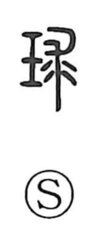

球

Uncategorized
Kun: tama | On: kyu
ball ・ sphere ・ jade ball
Explanation
A phono-semantic character: the jade element signals meaning, while 求 provides the sound. 求 originally depicted a torn-off beast hide—the source of 裘, “leather garment.” Because such a hide can be rolled up into a rounded shape, 求 came to be associated with roundness, and 球 thus names the rounded jade ball. In antiquity, small and large jade balls were exchanged as emblematic tokens of royal rank. These jade spheres were regarded as condensations of numinous vitality and as symbols of the spirit; in Japan they are called tama, a word linked with tamashii, “soul,” reflecting the belief that the spirit could dwell within them.